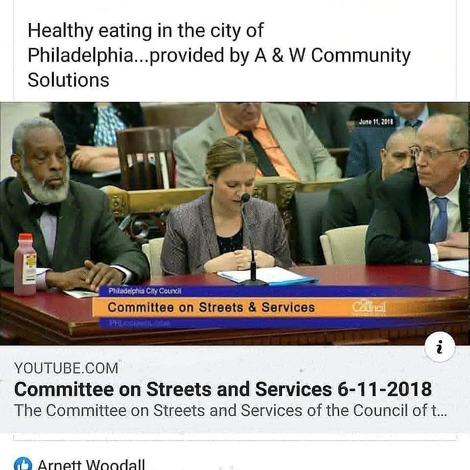
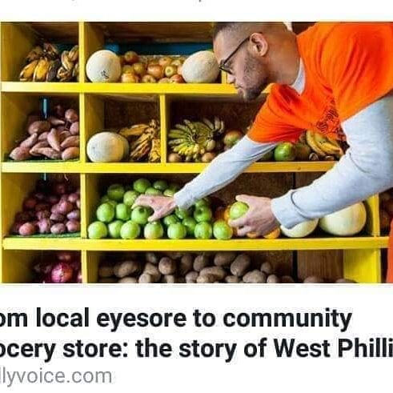
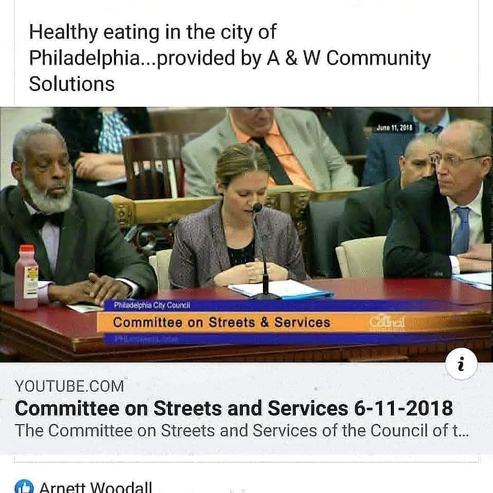
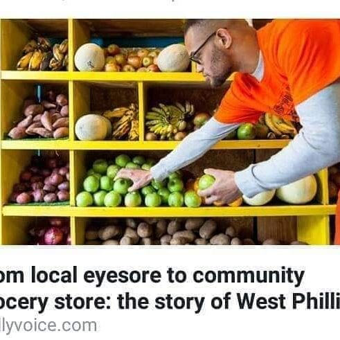

DUCE
WEST PHILLIE
PRODUCE
ABOUT US
West Phillie Produce is globally published as the model for all underserved communities across the country.
Arnett Woodall, Owner, and builder of West Phillie Produce broke ground July 7th, 2007 and opened to the public July, 9th 2009.
Download Electronic Press Kit HERE“Fresh fruits and vegetables must be accessible and affordable to lower-income communities”
Owner Arnett Woodall is a man on a mission to build a community with healthy eating habits and to bring affordable fresh fruits and vegetables to inner city food deserts.
Our Services
Specialize in:
- Party trays
- Juices and smoothies
- Array of different salads
- Catering
- Landscaping
- Healthly cooking classes
We Deliver 2 miles in every direction
stop by and pick up some fresh fruit
Landscaping & Construction
We offer service that include:
Tree Cutting
Snow Removal
Landscaping
Concrete and Home Improvement
PRESS
West Phillie Produce on Fox 29 News
West Phillie Grocer Struggles as Eating Habits are Hard to Change
“Fresh fruits and vegetables must become an easier and more common alternative for communities living in food deserts”
West Phillie Produce actually operates as a hybrid, since the grocery store is linked to nonprofit, A&W Community Solutions.
Woodall employs neighborhood youth at the store and teaches life skills as well as the basics of running a community-based grocery store.
“It’s important to include the youth,” he says. “We are creating future customers of healthy practices and contributing to more stable communities when we involve them in our food and our programs.”
SOME DELICIOUS SAMPLES

.jpg)
 


